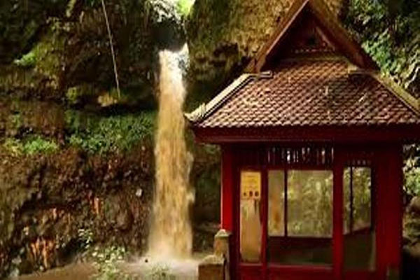

Beberapa orang yang saya tanya perihal Curug Dago mengaku tidak menahu soal adanya air terjun di Dago, Bandung. Padahal mereka ini yang sudah lama tinggal di Kora Kembang. Letaknya pun terhitung tak terlalu jauh dari jantung kota Bandung. Pun turis-turis sering melewati kawasan ini untuk wisata alam. Seperti yang tertulis dalam ragamwisata.com, lokasinya yang dapat dikatakan tersembunyi karena berada di daerah Bukit Dago yang termasuk dalam kawasan Taman Hutan Raya Ir. H. Juanda, Bandung, dan kurangnya promosi wisata membuat air terjun ini semakin sedikit pengunjungnya. “Biasa aja sih soalnya airnya enggak bening dan pendek curugnya,” ungkap Zaki, salah satu warga Bandung yang pernah mengunjungi tempat wisata ini. Air yang keruh ini disinyalir merupakan dampak dari pencemaran. Permukiman serta pabrik-pabrik pengolahan dituding pula sebagai isu penyebab hutan di Curug Dago tergerus. Pun kesan yang ditinggalkan selain airnya adalah fasilitas yang dibilang tak sebanding dengan ‘hiburan’ yang didapat. “Sekitar lima belas ribu kemahalan, sih. Kalau biaya tiket segitu, masih kurang fasilitasnya,” kata Resya.
Banyak pula dari pengunjung yang tidak tahu kalau terdapat unsur sejarah di Curug Dago. Prasasti yang jadi bukti luput begitu saja. Pos merah yang letaknya tak jauh dari air terjun terbilang tak terawat sehingga pengunjung pun malas masuk untuk tahu ada apa di dalamnya. “Pos bangunan yang merah itu juga enggak tahu buat apa. Terlihat enggak terawat. Tangga menuju ke sana pun banyak yang harus diperbaiki,” cerita Resya. Kekayaan alam yang letaknya dekat dengan perkotaan berpotensi sebagai wisata ‘pelarian’ dari penatnya hingar bingar kota justru kurang meninggalkan kesan ‘ingin datang lagi’ ke pengunjung-pengunjungnya. Baik masyarakat atau pemerintah kurang bersinergi membuat cagar budaya ini lestari dan kaya edukasi. “Kalau pengembangannya serius mah bisa jadi bagus dan strategis, dekat kota,” kata Zaki. (https://student.cnnindonesia.com)